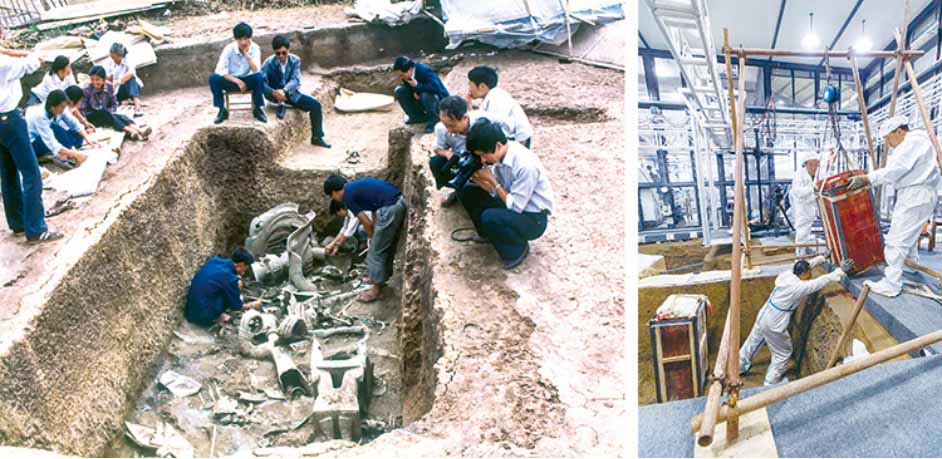
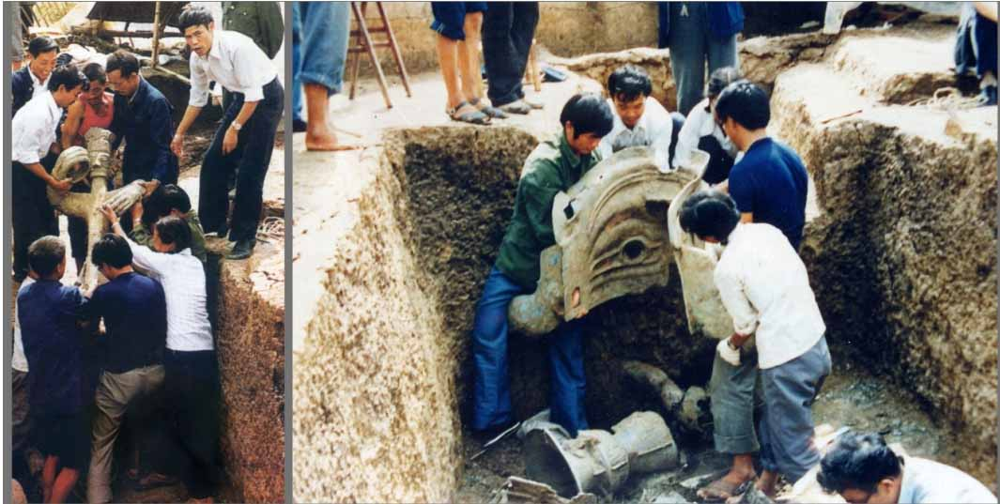
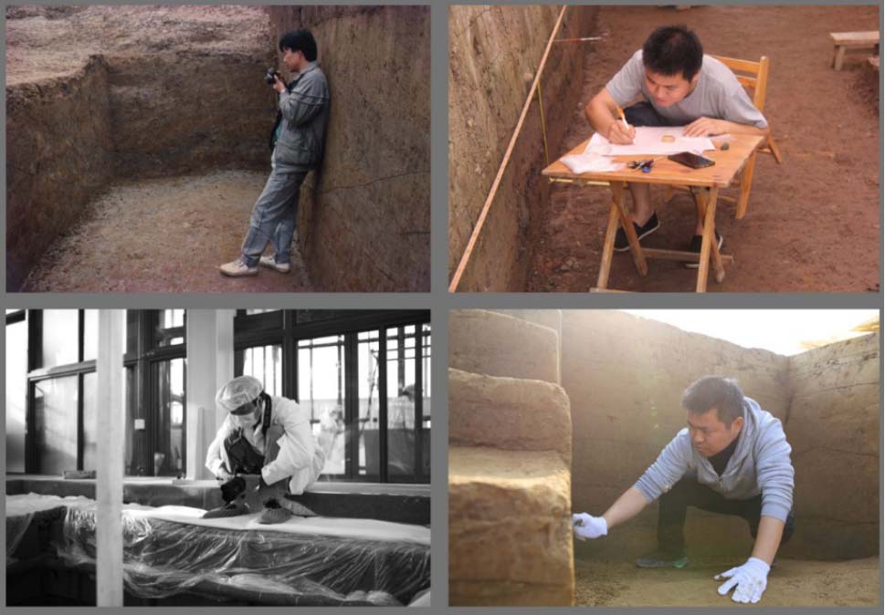

1929年春，农民燕道诚在三星堆月亮湾燕家院子溉田挖水坑时发现玉石器坑，出土玉石器300余件。 这部分玉器除四川省博物馆、四川大学博物馆、广汉市文管所收藏部分外，其余不知下落。
这是三星堆遗址被埋藏在地下三千多年后，首次现于世间。20世纪30年代，三星堆遗址陆续出土几百件玉石器，其年代被定为西周时期。
1963年，四川省文物管理委员会、四川大学历史系考古专业组成联合发掘队， 在月亮湾地点进行科学发掘。发现房址、灰坑等遗迹，出土玉石器、陶器、骨器、青铜器等遗物。
 1980年以后，四川省文物考古研究所等单位初步建立起遗址的分期及年代序列。
1986年，三星堆遗址的两个最重要的大型祭祀坑被发现，分别是一号坑和二号坑。
2019年10月至2020年10月，又有6个祭祀坑被找到并陆续启动发掘。
